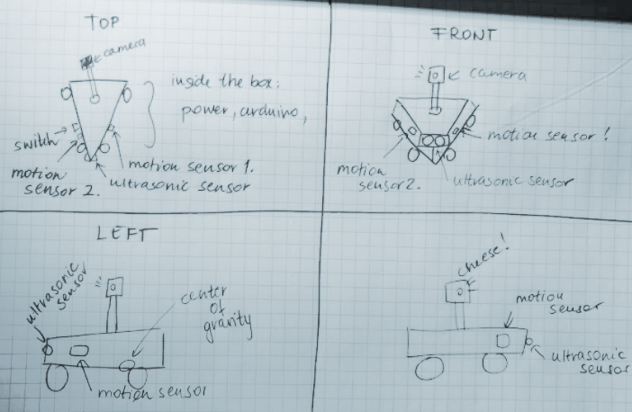
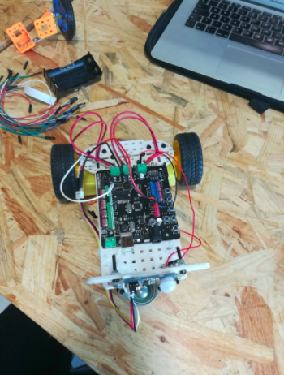
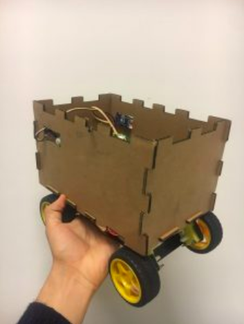
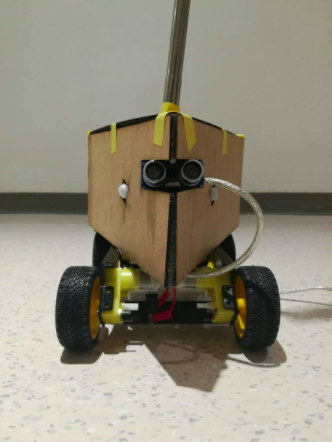
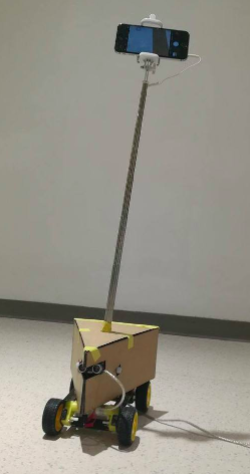
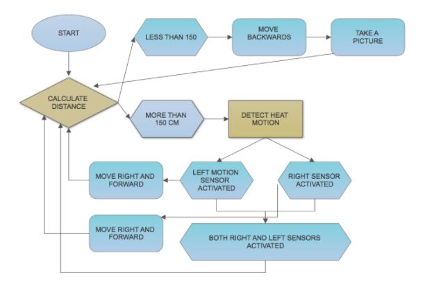

Cheese
By Kevin Orellana & Sara Bruszt
Cheese is a seflie robot.
BACKGROUND
We recognized people tend to see the world only through their camera lenses. Experiences are recorded but only after someone in the group breaks the flow of activity and pulls out their cellphone to take a photo or video.
But what if a robot existed that could autonomously record your experiences? Or perhaps help you record a movie? Maybe even follow you on a hiking trek!
DESIGN PROCESS
Robot with 2 motion sensors, one ultrasonic range sensor, two motorized wheels.


Robot with 4 motors, one ultrasonic sensor, two motion sensors and cardboard body.

Robot with Cheese body, auto-activated selfie stick and previously used sensors.


HARDWARE
Arduino Romeo
4 DC motors
2 Grove heat motion sensors
1 Ultrasonic rangefinder
2 3.1V rechargeable lithium batteries
Battery holder
Wires
Selfie stick with push-button
Relay switch
SOFTWARE

CONCEPT
Sensing: Cheese’s ability to sense motion around it as well as obstacles in front of it.
Thinking: Our robot can adapt to its environment while avoiding obstacles and locating its target.
Interactivity: Cheese senses human activity and records it.
Function: Can serve as a security robot pet or selfie robot.
The robot is programmed in Arduino.
Role
Robotics, UX design